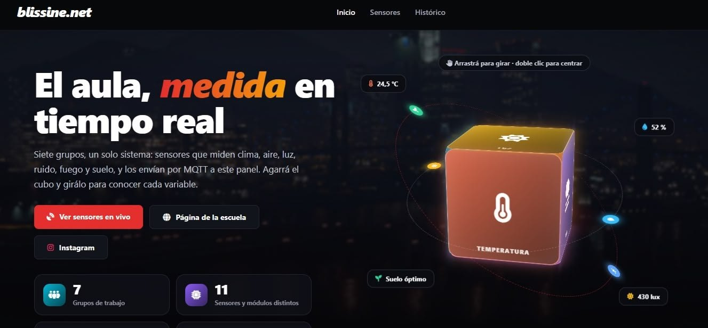
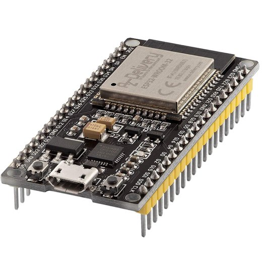
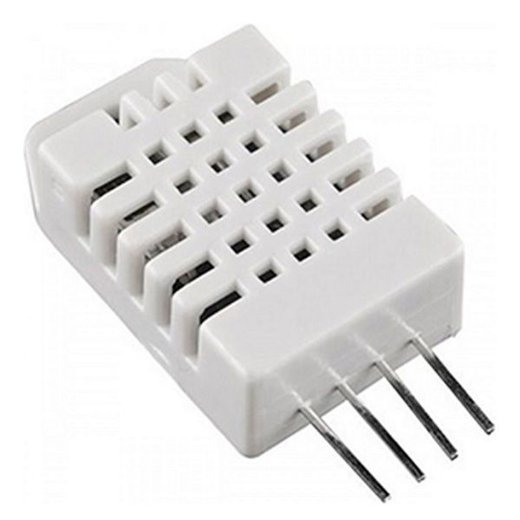
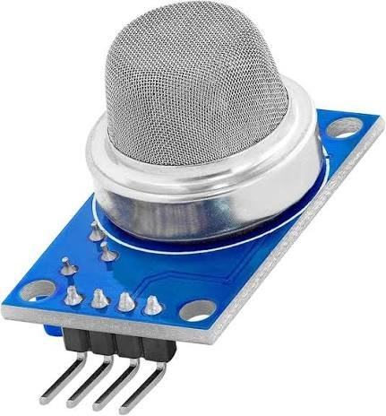
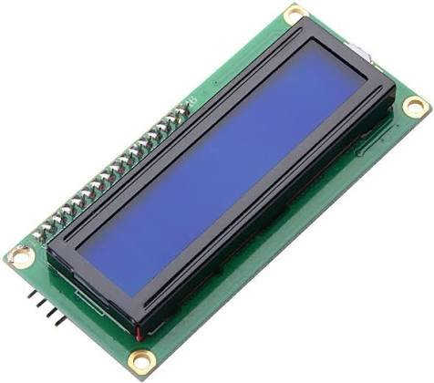
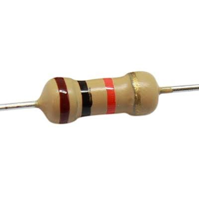
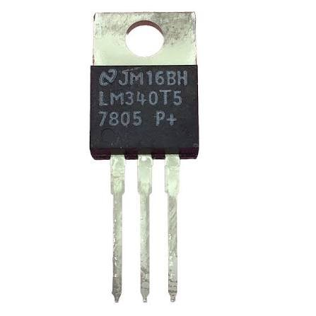
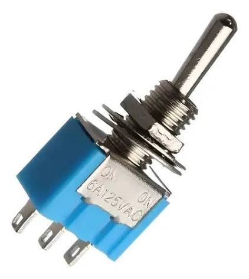

Carpeta del proyecto · Proyecto institucional 6to año
Documentación de nuestro nodo de calidad de aire, temperatura y humedad. Se armó a partir de la carta Gantt, la lista de precios, la bitácora y los códigos del equipo.
Recorrido sugerido
Proyecto en vivo
Ver el proyecto
Dashboard del equipo con la temperatura, la humedad y el ICA del nodo del Aula Taller, y más abajo el dashboard del curso con todos los nodos.
El proyecto todavía no está publicado
Todavía no hay una dirección cargada.
Dashboard del curso
Muestra todos los nodos del curso.

Accesos
Primera sección
1. Control de cambios
Registro de las modificaciones del proyecto, armado con las tareas de la carta Gantt.
| Versión | Fecha | Responsable | Detalle |
|---|
Primera sección
2. Objetivo y visión general
Objetivo
Construir un nodo con ESP32 que mide temperatura, humedad y calidad de aire, muestra los valores en un display LCD, los envía por WiFi a un broker MQTT y los publica en un dashboard web. El nodo se instala en el Aula Taller.
Variables que mide el nodo
Temperatura
Sensor DHT22. Se lee cada 5 segundos y se publica cada 10.
Humedad relativa
Sensor DHT22, con el mismo ciclo que la temperatura.
Calidad de aire (ICA)
Sensor MQ-135 por salida analógica, informado como índice ICA de 0 a 500.
Visión general
El nodo lee los sensores, muestra los datos en el LCD y los publica por MQTT. El dashboard los recibe y los grafica. El LCD indica además si el WiFi y el broker están conectados.
Primera sección
3. Problema a resolver
Sector donde se instala
El nodo se instala en el Aula Taller, un espacio cerrado donde el grupo pasa muchas horas y donde importa cuidar el ambiente.
Qué se observaba antes
No había forma de medir el ambiente, así que se decidía por sensación. No se sabía qué tan mal se ventilaba el aula ni cuándo la temperatura o la humedad salían de un rango razonable.
Qué decisión puede tomar la escuela
Con la pantalla del nodo y los gráficos del dashboard, la escuela puede abrir las ventanas cuando el aire está cargado, o regular la temperatura y la humedad para que el espacio sea más cómodo.
Primera sección
4. Alcances
Incluye
- Nodo IoT con ESP32 y dos sensores (DHT22 y MQ-135)
- Display LCD 16x2 por I2C con desplazamiento y estado de red (W+/M+)
- Firmware con reconexión automática a WiFi y MQTT
- Publicación por MQTT en tópicos propios del grupo
- Dashboard propio del equipo con semáforo, gráfico de 24 horas, alertas y modo pantalla completa para un monitor del aula
- Calibración propia del MQ-135 en aire limpio, con una página local servida por el propio ESP32
- Alimentación con batería de 12 V, regulador 7805 con disipador e interruptor de encendido
- Placa soldada, componentes fijados en una caja estanca y documentación
Inclusiones a futuro
- Conversión del MQ-135 a ppm con una curva por gas
- Actuadores, por ejemplo ventilación automática según el ICA
- Actualización de firmware por OTA
Primera sección
5. Equipo e integrantes
· ·
Integrantes
Roles dentro del equipo
Organización y reportes
Docentes
| Asignatura | Docente |
|---|
Auditor de los proyectos:
Primera sección
6. Asignaturas involucradas
Cada asignatura y los temas que aportaron al proyecto.
- Componentes de hardware
- Interfaces físicas
- Sensores y transductores (DHT22 y MQ-135)
- Diseño de circuitos
- Fuentes de alimentación
- Divisores de tensión
- Continuidad eléctrica
- Mantenimiento físico de equipos
- Estructuras de datos
- Procesamiento de entradas y salidas
- Funciones
- Manejo de librerías en C/C++
- Control de flujos no bloqueantes con temporizadores (millis())
- Configuración de redes inalámbricas (Wi-Fi)
- Modos de operación (Access Point)
- Servidores web locales
- Transmisión de telemetría
- Introducción al HTML
- Estructuración de texto
- Diseño y desarrollo de páginas web
- Etiquetas y contenedores
- Presentación visual de información
- Dashboard del equipo como actividad de la materia
- Técnicas de planificación
- Gestión de recursos materiales
- Toma de decisiones
- Análisis de ruta crítica ante contingencias
- Auditoría
- Control y registro de incidentes en bitácora
- Documentación técnica
- Control de cambios
- Evaluación de riesgos físicos y operativos
- Orientación en el diseño del dashboard
- Orientación en la carpeta del proyecto (esta página)
Segunda sección
7. Planificación y metodología Scrum
El trabajo se organizó en tres sprints. Cada uno se resume con su objetivo o contingencia, las tareas de la carta Gantt que abarcó y su resolución.
Sprint 1
Tareas 10 a 15
18/09/2026 a 01/10/2026
Objetivo: obtener el prototipo físico del nodo para validar de forma integrada los sensores, el ESP32 y el display.
Desvío: el equipo presentaba un atraso: la adquisición de componentes y el ensamblado de la placa experimental no se habían realizado y bloqueaban las pruebas de integración.
Resultado: componentes adquiridos, placa diseñada, soldada y armada, caja estanca mecanizada y módulo step-down incorporado.
Sprint 2
Tareas 20 a 27
09/10/2026 a 23/10/2026
Contingencia: falla del módulo WiFi del ESP32 C3 Mini, dañado por calor al soldar la antena. Obligó a migrar al NodeMCU ESP32 v1.1 y a rediseñar la placa por la diferencia de pinout.
Resolución: reasignación de pines (DHT22 en GPIO 27, MQ-135 en GPIO 34 con divisor de tensión y LCD por I2C en GPIO 21 y 22), reemplazo del NodeMCU con falla de fábrica, calibración del MQ-135 y código final.
Sprint 3
Tareas 30 a 32
03/11/2026 a 06/11/2026
Contingencia crítica: cerca de la fecha de entrega, el nodo quedó sin ESP32 y sin LCD por una sobretensión de 12 V, provocada por la inversión de los terminales del regulador 7805.
Mitigación: se corrigió la conexión del 7805, se adquirió un nuevo ESP32 y se reemplazó el LCD con el que aportó el docente Gustavo Werner, lo que permitió recuperar las funciones base del nodo.
Segunda sección
8. Carta Gantt
Carta Gantt del equipo: 39 tareas entre el 19/6 y el 20/11 de 2026. La primera (19/6) es la planificación inicial; el trabajo en clase se retomó el 11/8.
Gantt del equipo (Google Sheets)
Planilla sin conectar Abrir en Google Sheets
Planilla sin conectar.
En la planilla, la columna roja marca los días con el equipo ausente (sin progreso) y la gris marca el viaje y el asueto del 15/10 (día del partido de Tres de Febrero). “Días” es fin menos inicio: 0 es una tarea de un solo día.
Segunda sección
9. Entregables e hitos
| Hito | Período | Entregable |
|---|---|---|
| Planificación y capacitación | 19/6 | Ideas básicas del proyecto |
| Compra y pruebas iniciales | 11/8 a 21/8 | Material comprado, precios, componentes probados, códigos del DHT22 y MQ-135, consulta al auditor |
| Documentación e integración | 25/8 a 3/9 | Gantt y lista de precios actualizadas, código unificado con LCD, esquema de conexión |
| Placa del nodo y gabinete | 18/9 a 1/10 | Componentes comprados, esquema de la placa, soldadura, caja estanca cortada y módulo step-down |
| Pruebas con el montaje armado | 2/10 a 9/10 | Divisor de tensión y antena; se detecta el daño del ESP32 C3 Mini |
| Reemplazo del ESP32 y nueva placa | 13/10 a 23/10 | NodeMCU ESP32 (reemplazado por la escuela) y placa nueva |
| Calibración y código final | 23/10 | MQ-135 calibrado en aire limpio y código con los pines del nuevo ESP |
| Alimentación del nodo | 29/10 a 5/11 | Falla del módulo step-down y cambio al regulador 7805 con disipador |
| Recuperación del nodo | 5/11 a 6/11 | Otro ESP32 comprado y LCD de reemplazo brindado por el docente Gustavo Werner |
| Montaje en la caja estanca | 13/11 a 17/11 | Componentes fijados: placa con separadores, batería con riel DIN y sensores y display con sellador de silicona |
| Dashboard del equipo y página web | 12/11 a 17/11 | Dashboard propio del nodo y carpeta del proyecto actualizada |
| Exposición a familias, docentes y alumnos | Jueves 19/11 | Muestra de Informática en la Semana de la Escuela Técnica |
| Defensa oral y muestra final | Viernes 20/11 | Defensa oral y presentación final del proyecto ante los auditores |
Tercera sección
10. Arquitectura del sistema
Recorrido de un dato desde que lo mide el sensor hasta que aparece en el dashboard.
- Sensores: el DHT22 mide temperatura y humedad, y el MQ-135 la calidad de aire.
- ESP32: lee los sensores, muestra los valores en el LCD y publica por MQTT cada 10 segundos.
- WiFi y broker: el nodo se conecta a la red del laboratorio y al broker MQTT, y reintenta solo si se cae alguno.
- Dashboard: página web que recibe los datos y los grafica.
El proyecto no usa una base de datos propia: se utiliza como base el servidor de la escuela.
Tópicos MQTT
| Tópico | Contenido |
|---|---|
6to_info/A/G1/temperatura | Temperatura en °C |
6to_info/A/G1/humedad | Humedad relativa en % |
6to_info/A/G1/contaminacion | Valor del MQ-135 (ICA) |
Tercera sección
11. Plano de diseño
11.1 Plano del nodo
Caja estanca de 20 × 10 cm. Bocetos del equipo digitalizados: frente, costado derecho e interior.
11.2 Conexiones del nodo
Pines del NodeMCU ESP32. El divisor de tensión está soldado en la parte inferior de la placa experimental de 5x7 cm.
| Componente | Pin del componente | Conexión | Notas |
|---|---|---|---|
| Batería 12 V | +12 V / GND | Interruptor y regulador 7805 | El interruptor va en la entrada de 12 V, antes del regulador |
| Regulador 7805 (LM340T5) | OUT +5 V / GND | Pin VIN y GND del ESP32; VCC del MQ-135 y del LCD | Reemplazó al módulo step-down. Lleva disipador |
| DHT22 | DATA | GPIO 27 | VCC a 3,3 V (pin 3V3 del ESP32) |
| LCD 16x2 (I2C) | SDA / SCL | GPIO 21 / GPIO 22 | Dirección I2C 0x27, VCC a 5 V |
| MQ-135 | AO | GPIO 34 (ADC1), con divisor de tensión | 10 kΩ en serie desde AO y 18 kΩ a GND (no se consigue de 20 kΩ). VCC a 5 V |
Tercera sección
12. Componentes
Componentes que usa nuestro nodo.

NodeMCU ESP32 v1.1
Microcontrolador con WiFi. Lee los sensores, maneja el LCD y publica por MQTT. Reemplazó al ESP32 C3 Mini, cuyo módulo WiFi se dañó al soldar la antena. En el proyecto se usaron varias placas: la primera llegó con falla de fábrica y la escuela la cambió, y otra se quemó por una sobretensión de 12 V, por lo que se compró una nueva.

DHT22
Sensor digital de temperatura y humedad relativa, conectado al GPIO 27. Se lee cada 5 segundos.

MQ-135
Sensor de gases para calidad de aire. Necesita precalentamiento. Se lee por la salida analógica (GPIO 34) y se informa como índice ICA, calibrado en aire limpio.

LCD 16x2 I2C
Muestra temperatura y humedad con desplazamiento en la línea 1, y el ICA y el estado de red en la línea 2. El LCD original se quemó por la sobretensión y el docente Gustavo Werner entregó otro.

Divisor de tensión
Resistencias de 10 kΩ y 18 kΩ que bajan la señal del MQ-135 al rango del ESP32.

Regulador 7805
Regulador de tensión LM340T5 de 12 V a 5 V que alimenta el nodo, con disipador. Lo entregó el docente Gustavo Werner y reemplazó al módulo step-down.

Interruptor de encendido
Interruptor que enciende y apaga el nodo. Va en la entrada de 12 V, antes del regulador.
Tercera sección
13. Diseño de la aplicación (dashboard)
Dashboard del equipo para el nodo aire-01 del Aula Taller. Es una página web de un solo archivo HTML, con CSS y JavaScript propios y sin frameworks ni librerías de gráficos: los gráficos se dibujan en SVG con JavaScript y la única dependencia externa es MQTT.js 5.10.1, cargada desde CDN. Muestra la temperatura, la humedad (DHT22) y el ICA relativo de 0 a 500 (MQ-135). Se creó a pedido del docente Marcelo De Donato, como actividad de su materia y para la exposición del 19/11.
De dónde salen los datos
- MQTT: se conecta por WebSockets al broker Mosquitto (
ws://proyecto2026.webhop.net:9001) y se suscribe a6to_info/A/G1/#. - Servidor web: cada 2 segundos lee la página del servidor (
http://proyecto2026.webhop.net:8085/) y extrae los valores del Grupo 1. - Usa las dos fuentes reales a la vez, sin modo demo.
Cómo se procesan
- Reconoce los campos aunque cambie el nombre (temp o temperatura, hum o humedad, ica, aire, mq).
- Valida cada valor: descarta los vacíos y los que están fuera del rango físico del sensor (temperatura de -40 a 80 °C, humedad de 0 a 100 %, ICA de 0 a 500) y conserva el último valor conocido.
- Ignora los mensajes MQTT retenidos, porque son la última medición guardada y no una lectura en vivo. Un dato del servidor solo cuenta como en vivo si cambia respecto del anterior, ya que un nodo apagado deja congelada su última medición.
- Si pasan más de 5 minutos sin datos, marca el nodo como “Desconectado” y los valores como “dato viejo”.
- Guarda el historial de las últimas 24 horas mientras la página está abierta, calcula la diferencia con la lectura de hace 1 hora y genera una alerta solo cuando el nivel de una variable empeora.
- Muestra los mensajes por minuto, la señal WiFi (RSSI) y la fuente del dato (MQTT o servidor web).
Estado de cada variable
| Variable | Normal | Atención | Alerta |
|---|---|---|---|
| Temperatura | 18 a 26 °C | 16 a 18 °C o 26 a 30 °C | Fuera de esos rangos |
| Humedad | 40 a 60 % | 30 a 40 % o 60 a 70 % | Fuera de esos rangos |
| ICA | Hasta 100 | 101 a 150 | Más de 150 |
El medidor del ICA tiene seis categorías: 0 a 50 Buena, 51 a 100 Moderada, 101 a 150 Poco saludable para grupos sensibles, 151 a 200 Poco saludable, 201 a 300 Muy poco saludable y 301 a 500 Peligroso. Cada una tiene su acción recomendada (ventilar, limitar la actividad o salir del aula). Los umbrales son valores de referencia escolares y todavía no están justificados con una fuente propia.
Pantalla completa y jerarquía
- Al pasar el navegador a pantalla completa (F11) el dashboard lo detecta solo y muestra únicamente lo esencial, sin scroll: las tres variables con cifras muy grandes, el semáforo en arco y las últimas alertas. Está pensado para dejarlo en un monitor del aula y leerlo a distancia.
- Las tres variables tienen el mismo peso y la cifra más grande de la pantalla. Lo secundario (rangos, diferencia con hace 1 hora y salud del nodo) va más chico y en gris.
Cómo se armó
- Se partió de un dashboard HTML ya funcional, con la conexión y la lógica de datos descritas arriba.
- Se rehízo solo la parte visual (HTML, CSS y funciones de dibujo) siguiendo la guía de orientación de la docente Lourdes Pedaci. La configuración y la lógica de datos se mantuvieron sin cambios.
- Después de la primera versión se ajustó el modo pantalla completa y se igualó la importancia de las tres variables.
- Funciona con datos reales del broker y del servidor, y se verificó en escritorio, en pantalla completa y en celular, sin errores de JavaScript ni scroll horizontal.
- Para el armado y el rediseño se usó Claude como herramienta de asistencia.
El MQ-135 responde a varios gases a la vez (CO₂, amoníaco, alcohol, humo) y entrega una sola señal, así que no permite saber cuánto hay de cada uno. Para informar ppm haría falta la curva de un gas puntual y una calibración con una concentración conocida, que el equipo no tiene. Por eso se informa un índice relativo ICA de 0 a 500, calibrado con el propio sensor: 0 corresponde al aire limpio (RAW 700) y 500 a una contaminación fuerte (RAW 2700), con el divisor de tensión instalado. No es el ICA oficial ni una concentración en ppm.
Seguimiento
14. Presupuesto y lista de materiales (BOM)
Lista de materiales del nodo con los precios de la lista de precios del equipo.
| Ítem | Cant. | Precio unit. | Subtotal |
|---|
Los ítems sin precio fueron provistos por la institución.
Seguimiento
15. Bitácora de pruebas
Registro armado con la bitácora de la carta Gantt.
| Fecha | Prueba | Resultado esperado | Resultado obtenido | Estado |
|---|
Seguimiento
16. Resultados y mejoras futuras
Resultados
- El nodo lee temperatura, humedad y calidad de aire, y los muestra en el LCD.
- Publica los datos por MQTT en los tópicos
6to_info/A/G1/…y se reconecta solo si se cae la red. - La alimentación pasó por tres etapas: módulo step-down, un cambio por incidente y finalmente el regulador 7805 con interruptor de encendido.
- El MQ-135 se calibró en aire limpio (RAW cercano a 700) y con vapores de alcohol llegó a unos 2900, por lo que se usa 700 como 0 y 2700 como 500 del índice ICA.
- Las tareas de la carta Gantt realizadas hasta el 19/11 figuran al 100 %. El reporte al dashboard se probó con éxito el 23/10, el nodo quedó fijado en la caja estanca y operativo, y se presentó en la Semana de la Escuela Técnica.
Mejoras futuras
- Conversión del MQ-135 a ppm con una curva por gas y una calibración con concentración conocida
- Actuadores, por ejemplo ventilación automática según el ICA
- Actualización de firmware por OTA
- Asegurar el broker (contraseñas fuera del código, ACL y TLS)